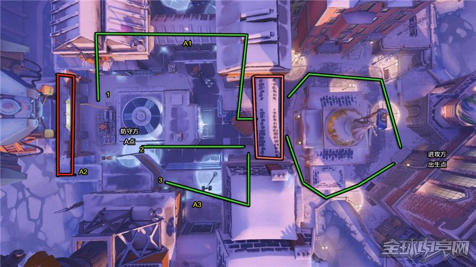
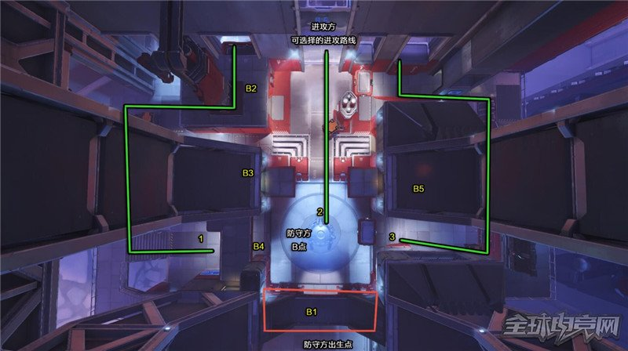

守望先锋的地图风格迥异，胜利方式也多种多样，让玩家体验到不同的建筑同时，也思考适合各个地图的打法以及路线。今天给大家详解一下守望先锋沃斯卡娅工业区地图，以占点为胜利机制的地图。
攻防双方首先进攻和防守A点，如果A点被进攻方攻破则进入到B点的攻防战同时刷新比赛的时间.进攻方只有在占据A点后成功的占据B点才算最终的胜利，否则防守方获胜。
如果进攻方在争夺A点的限制时间内没有成功占据A点,则表示防守方获胜,从而不需要进入B点的争夺战。
“沃斯卡娅工业区”这张图是典型的占点图, 其中有A.B两个区域,进攻方出生在A区域外面的教堂中,防守方出生在B区域工厂的后面。
正如花村一样，沃斯卡娅工业区在A点的争夺中心也是在图中央橙色的那个大门，双方一开场都会围绕大门展开攻防战。攻击方一旦攻破大门的防守，可以分为三路进攻。
侧翼进攻适合快速移动的英雄比如闪光，源氏可以迅速解决防守方在线路1沿线的防守势力如果有寡妇(黑百合)半藏在沿线的话，可以迅速清理掉。
直接从地图中路进攻，也是相对难一些的路线，防守方会重点盯防这一线，适合肉盾型英雄推进。
也是侧翼进攻，从这一路进攻的英雄，可以找合适机会绕后配合正面的队友进攻。
寡妇(黑百合)，半藏，托比昂，堡垒A1、A2、A3防守英雄需堤防进攻方的侧翼包抄，尤其是防守A1那个窗口的英雄，在二楼防守侧面的时候，小心正面来人。
PS：A2附近是个平台(红色标记的方框)，在其周围活动的时候，小心掉入悬崖中，守望先锋虽然没有高空坠落的伤害，但是掉下悬崖是直接毙命的，所以需小心后退到边缘。
进入B点之前，进攻方可选择三条不同的路线进攻。
通过自动升降的平台进到工厂内部，适合移动较为迅速的英雄，从侧翼包抄。
从正门直接进入工厂，小心被集火，最好有肉盾型的英雄，挡在前面，掩护队友进攻。
需要从上图最下方的通道进入工厂，属于侧翼进攻，优点是可以直接走到B点的侧翼，缺点是容易被防守方集火。
进入工厂后，沿着之前提到的进攻方三条路线进攻。
位于上图最下方红色标记的方框就是防守方一般重兵把守的地方也就是B1所在的地方，这个位置可以兼顾进攻方的三条进攻线路，当然缺点也很明显，容易被集火，所以想在B1处防守的英雄必须提防对面的集火，最好有辅助型英雄在旁边随时加血，推荐组合天使配堡垒。
堡垒，托比昂B1、B4 提防进攻方从侧面，后面包抄，最好有辅助型英雄配合。
寡妇(黑百合)，半藏B2、B3、B5处在二楼的位置可以抓在一楼的进攻方英雄。